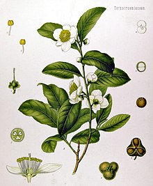

The tea plant originated in the region encompassing today's Southwest China, Tibet, north Myanmar and Northeast India, where it was used as a medicinal drink by various ethnic groups.[7][8] An early credible record of tea drinking dates to the 3rd century AD, in a medical text written by Hua Tuo.[9] It was popularised as a recreational drink during the Chinese Tang dynasty, and tea drinking spread to other East Asian countries. Portuguese priests and merchants introduced it to Europe during the 16th century.[10] During the 17th century, drinking tea became fashionable among the English, who started to plant tea on a large scale in India.

Tea plant (Camellia sinensis) from Köhler's Medicinal Plants, 1897
The term herbal tea refers to drinks not made from Camellia sinensis: infusions of fruit, leaves, or other plant parts, such as steeps of rosehip, chamomile, or rooibos. These may be called tisanes or herbal infusions to prevent confusion with "tea" made from the tea plant.
Etymology
Tea plant
The etymology of the various words for tea reflects the history of transmission of tea drinking culture and trade from China to countries around the world.[11] Nearly all of the words for tea worldwide fall into three broad groups: te, cha and chai, present in English as tea, cha or char, and chai. The earliest of the three to enter English is cha, which came in the 1590s via the Portuguese, who traded in Macao and picked up the Cantonese pronunciation of the word.[12][13] The more common tea form arrived in the 17th century via the Dutch, who acquired it either indirectly from the Malay teh, or directly from the tê pronunciation in Min Chinese.[12] The third form chai (meaning "spiced tea") originated from a northern Chinese pronunciation of cha, which travelled overland to Central Asia and Persia where it picked up a Persian ending yi, and entered English via Hindi in the 20th century.[14]
.jpg)